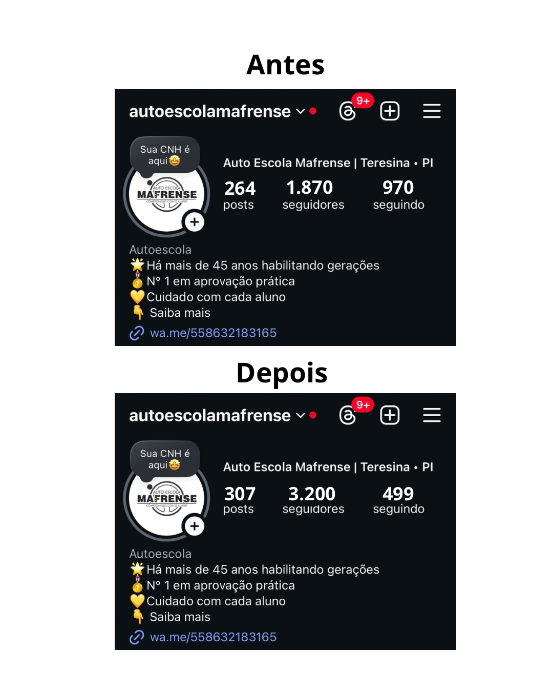
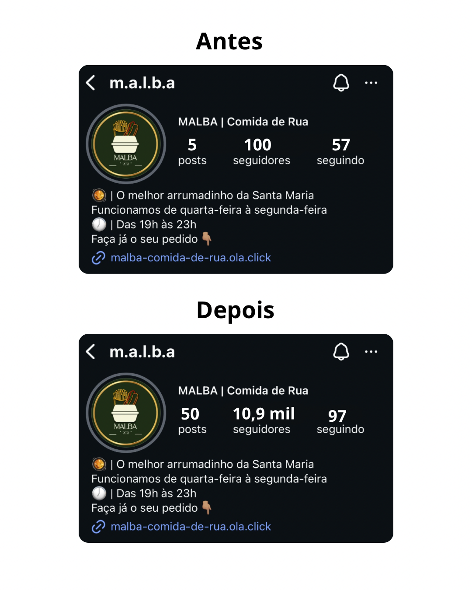

Parceiros que transformaram seus negócios



Mais de 100 milhões de brasileiros estão ativos nas redes sociais. Hoje, a internet se tornou um dos maiores canais de comunicação direta com potenciais clientes e quem está fora do digital está deixando muitas oportunidades na mesa.
→Meu nome é Pablo Renato, tenho 23 anos e trabalho como social media há 2 anos. Ajudo empresas a se destacarem nas redes sociais por meio de estratégias de conteúdos que fortalecem o posicionamento, aumentam a visibilidade e aproximam marcas do seu público alvo. Meu foco é transformar perfis comuns em canais de comunicação, conexão e resultados.
Análise, briefing do negócio e criação dos roteiros projetados para atingir os objetivos.
Logo após a criação e aprovação dos conteúdos, marcamos a data para as gravações.
Agora vamos para as postagens e análises dos conteúdos para saber os que mais perfomaram.
Depois que analisarmos às métricas dos conteúdos, os melhores formados. Chegou a hora de impulsionar estrategicamente cada conteúdo postado.
Vamos discutir seu próximo projeto de vídeo.
Entrar em Contato Agora